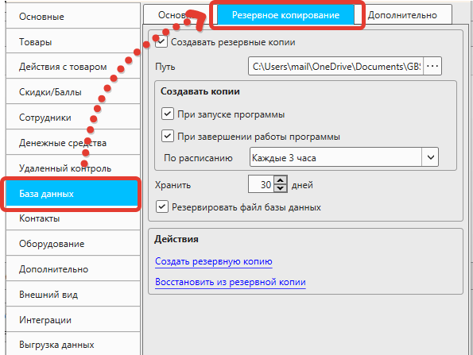
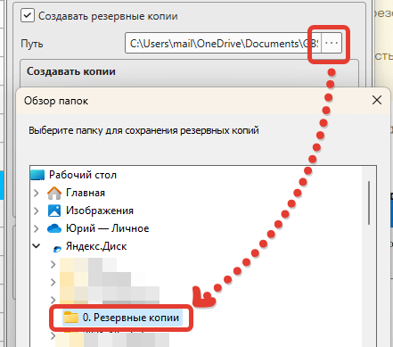
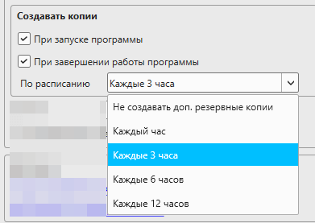

Что такое резервная копия
Резервная копия (бэкап) это архив с данными, созданный для того, чтобы в случае возникновения нештатной ситуации (выход компьютера из строя, повреждение данных) можно было восстановить информацию.
Кассовая программа GBS.Market имеет встроенный механизм создания резервных копий. Для того чтобы настроить автоматическое создание резервных копий, необходимо выполнить действия, описанные ниже.
Полезные материалы
Включение резервного копирования
В меню главной формы нажмите Файл – Настройки, а перейдите на вкладку "База данных", затем "Резервное копирование".
Чтобы резервные копии создавались, убедитесь, что опция "Создавать резервные копии" включена. Включите её, если она она неактивна.
Папка для сохранения резервных копий
Создайте папку, в которую вы хотите сохранять резервные копии.
Важно
Никогда не сохраняйте резервные копии на том же жестком диске, на котором хранятся данные. Если жесткий диск выйдет из строя, то вы потеряете и данные и резервные копии. Необходимо настроить сохранение резервных копий на отдельный диск (сетевой, внешний, USB-носитель).
Рекомендации по хранению
- Облачное хранилище - Яндекс.Диск, Google Drive, Dropbox
- Внешний жесткий диск - USB-накопитель или внешний HDD
- Сетевой диск - NAS или другой компьютер в сети
- Отдельный физический диск - второй жесткий диск в компьютере
Совет
Разумнее настроить сохранение резервных копий в облако, чтобы иметь возможность восстановить данные, даже если компьютер не подлежит восстановлению.
Предположим, что мы создали папку "Резервные копии" в облачном хранилище "Яндекс.Диск". Нажмите на кнопку выбора папки, чтобы указать к ней путь.
Периодичность создания резервных копий
Вы можете выбрать, когда будут создавать резервные копии.
Период хранения копий
Чтобы не занимать место на жестком диске, программа будет удалять старые резервные копии. Срок хранений копий можно указать в настройках.
Срок хранения
Допустимые значения: от 7 до 365 дней.
При необходимости вы можете скопировать файлы резервных копий на другой носитель или в другую папку, чтобы они не были удалены.
Резервировать файл базы данных
Данная опция отвечает за добавление базы данных программы в архив резервной копии.
Важно
Не отключайте данную опцию, если не понимаете её назначение!
Данная опция должна быть включена для того, чтобы база данных добавлялась в резервную копию.
Но в ряде случае эту опцию имеет смысл отключить, например, при работе программы по схеме "сервер/клиент" на компьютерах-клиентах. Это позволяет снизить нагрузку на локальную сеть и ускорить запуск клиентов.
Важно для схемы "сервер/клиент"
При отключении опции в схеме "сервер/клиент" убедитесь, что хотя бы один из компьютеров создает бэкап базы данных!
Восстановление из резервной копии
Процесс восстановления данных из резервной копии описано в статье.
Полезные материалы
Краткая инструкция по настройке
- Откройте Файл → Настройки → База данных → Резервное копирование
- Включите опцию "Создавать резервные копии"
- Создайте папку для резервных копий (не на том же диске!)
- Укажите путь к папке резервных копий
- Выберите периодичность создания копий
- Установите период хранения копий (7-365 дней)
- Убедитесь, что опция "Резервировать файл базы данных" включена
- Сохраните настройки
Полезные советы
- Используйте облачное хранилище для максимальной безопасности
- Настройте автоматическое создание копий по расписанию
- Регулярно проверяйте, что резервные копии создаются
- Периодически тестируйте восстановление из резервных копий
- Храните резервные копии в нескольких местах
- Документируйте процедуры восстановления
Дополнительная информация
- Резервные копии создаются в формате ZIP-архива
- Размер архива зависит от объема данных в базе
- Процесс создания резервной копии может занять время
- Во время создания резервной копии программа может работать медленнее
- Рекомендуется создавать резервные копии в нерабочее время